밀리터리 잡담 (10/7)
게시: 2021-10-07T06:30:53+09:00
<지그재그에 얽힌 비극> 진짜 항모 킬러는 중국이 개발한 대함탄도탄 DF-21보다는 잠수함인데, 잠수함은 아무래도 수상함보다 속도가 느리고 어뢰는 사거리가 비교적 짧기 때문에 잠수함을 피하는 가장 좋은 방법은 항모가 멈추지 않고 항상 쾌속으로 항진하는 것. 그리고 절대 적이 예상하는 항로로 움직이지 않는 것. 그런데 그 두가지를 결합하다보니 나온 것이 지그재그 항진. WW1 때부터 애용되어온 이 지그재그 항진은 일반적으로 잠수함을 피하는 가장 좋은 방법이라고 알려져 왔음. 영화 죠스에도 그 일화가 나온 USS Indianapolis (CA-35)가 일본 잠수함 I-58에게 격침된 후 함장 Charles B. McVay III는 살아남은 사람 중 하나였는데 격침 당시 인디애나폴리스가 지그재그 항진을 하지 않고 있었기 때문에 잠수함에게 당했다고 해서 직무태만으로 군법회의에 회부되었을 정도. 재판결과는 유죄. 그러나 재판에 증인으로 나온, 어뢰를 쏜 일본 잠수함 I-58의 함장 하시모도의 증언을 포함해서 많은 생존 승조원 및 동료 해군 장교들의 증언은 모두 '지그재그 해봐야 잠수함 회피에는 사실 별로 효과 없더라'는 것. 아무튼 니미츠 제독은 제독 권한으로 유죄 평결을 무효화해버린 뒤 현역에 복귀시켰고, 맥베이 함장은 1949년 준장 계급으로 명예롭게 예편. 그러나 인디애나폴리스 전사자들의 유족들은 계속 맥베이 함장에게 원망하는 내용의 편지를 보냈고, 맥베이 함장은 마침내 1968년 해군 시절 사용하던 권총으로 자살... 지금도 지그재그가 과연 잠수함 회피에 도움이 되느냐에 대해서는 지금도 왈가왈부 썰이 많음. 현대 해군 함정들도 이렇게 지그재그 항진 훈련을 하고 있는지 모르겠음. 최소한 1982년 포클랜드 전쟁 때만 해도 영국 함대는 전쟁 구역 내에서는 특별한 경우 아니면 지그재그 항진을 했고 심지어 영국 잠수함에 격침된 아르헨티나 순양함 Belgrano도 (비록 13노트로 매우 느린 속도였지만) 지그재그 항진을 하고 있었음. ** 사진1. USS Indianapolis ** 사진2. 침몰하는 Belgrano
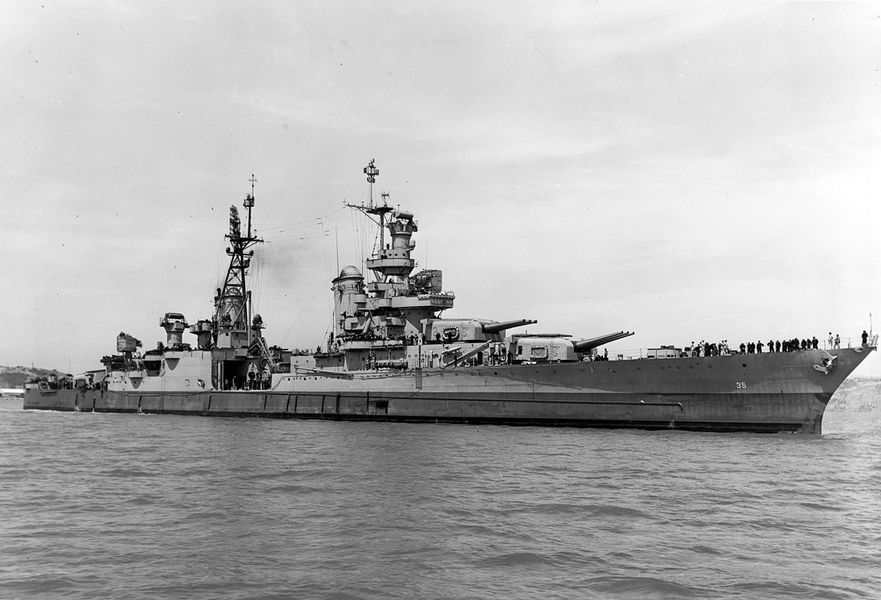 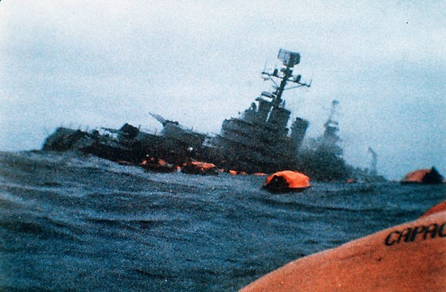
<뭐야, 우리 수년간 헛짓한거야?> WW1,2 동안 대서양과 태평양을 오간 수많은 군함들과 화물선들, 특히 미국과 영국 사이를 뻔질나게 횡단한 많은 호송선단들은 모두 잠수함 공격을 회피하기 위해 지그재그 항법을 구사. 매 10~20분마다, 작게는 20도 크게는 40도 정도로 항로를 틀며 속도도 늦추거나 높였음. 이는 멀리서 호송선단을 보고 접근하는 느린 잠수함들이 대체 어느 위치에서 저것들을 기다려야 하는지 모르게끔 만드는 것이 목적. 그러나 3~4척의 소함대로 만들어진 정규 미해군이 평범하게 직선 항진할 때조차 야간에는 지들끼리 들이받는 사고가 종종 일어나는데, 수십척의 다양한 국적과 다양한 수준의 민간 화물선으로 이루어진 선단(사진2)이 과연 어떻게 야간 및 안개 상황 속에서 서로 부딪히지 않고 지그재그를 수행할까? 더군다나 잠수함의 탐지를 피하기 위해 radio silence를 실행 중인 상태에서? 비결은 출항 전에 어느 구역에서 어느 구역까지 지그재그를 언제 어떤 패턴으로 한다고 세부적인 계획을 짜서 각 배의 선장들에게 전달하는 것. 그러나 현대적인 컴퓨터 서버들조차 시간 동기화가 쉽지 않은데 그 지그재그 패턴의 시간을 어떻게 정확하게 동기화할까? 그래서 만든 것이 zigzag clock (사진1). 항해용 정밀 시계인 크로노미터 테두리에 몇개의 눈금 장치를 만들어 그 눈금에 분침이 도달할 때마다 알람벨이 울리도록 되어 있음. 시간이 미리 동기화된 이 지그재그 시계를 가진 여러 선박들이 항해를 하다가 알람벨이 울리면 각 배들은 미리 정해진 지그재그 변침변속을 일제히 수행. 물론 날씨 좋을 때 깃발 신호를 통해 함대기함에서 재동기화 및 현장에서의 패턴 변경을 하기도 했음. 수십척의 화물선과 호송 구축함들이 10분~20분마다 이런 기동을 하는 것은 굉장한 노동과 신경 소모가 들어가는 것. 과연 이러는 것이 잠수함 회피에 도움이 되기는 할까? 라는 의문은 WW1 때부터 꾸준히 내려오던 것. 그러나 '안 하는 것보다야 낫지 않겠나'라는 생각으로 WW2 끝난 이후에도 계속 됨. 이 효과가 의심스러운 중노동은 잠대함 미쓸과 유도 어뢰가 개발되면서야 비로소 폐기되었음.
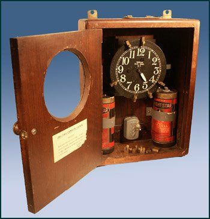 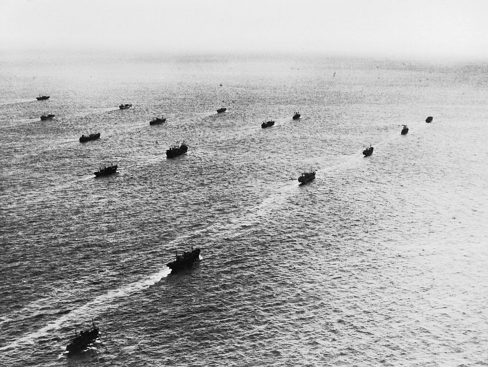
<SA-7 vs. Stinger> 80년대 쏘련 아프간 침공 때 이슬람 반군 무자헤딘의 산악 게릴라 매복 전술은 꽤 효과적. 이를 분쇄하기 위해 쏘련군이 도입한 것이 70년대 개발된 Mi-24 Hind 헬리콥터 (사진1). 투입 효과는 만점. 무자헤딘은 Mi-24를 '마귀의 병거'라고 불렀고 어떤 경우엔 이게 나타나기만 해도 줄행랑. 그래서 쏘련 보병들의 사기 진작을 위해서도 이를 자주 날렸음. 쏘련군이 아프간을 침공했을 때 미국은 음성적 소극적으로만 무자헤딘을 지원했는데 Mi-24가 나타나면서 무자헤딘이 궁지에 몰렸고 이를 극뽁하기 위해 미국이 Stinger 견착식 대공 미쓸(사진2)을 무자헤딘에게 공급하기 시작. 그러면서 쏘련군이 급속히 허물어졌다는 것이 톰 행크스 주연 2007년 영화 Charlie Wilson's War의 줄거리. 보고서에 따르면 스팅어는 쏘련군 항공기 269대를 격추, 쏘련이 아프간에서 상실한 항공기 451대의 절반이 넘는 분량에 기여. 그러나 실제로 스팅어 미쓸의 효과는 그리 높지 않았다고. 일단 저 항공기 격추 전과는 무자헤딘 전사들의 구두 보고에만 의존한 것인데, 원래 낚시꾼 말과 전투기 조종사, 그리고 대공포수의 말은 믿어서는 안됨. 가령 쏘련군이 아프간에서 상실한 Mi-24의 전체 숫자는 74대인데 그 중 30대 정도만 스팅어 미쓸에 맞아 떨어졌다고. 실은 스팅어 이전에 이미 무자헤딘은 파키스탄 등에서 도입한 쏘련제 SA-7 (사진3) 견착식 대공 미쓸을 이미 사용했고, 그걸로 42대의 헬기와 5대의 고정익 항공기를 격추. 그러나 불법 거래되어 무자헤딘 손에 들어간 SA-7은 원래 저성능에 품질 문제도 있었는데다 유통 과정에서 훼손된 것이 많아서 믿을 수 있는 미제 스팅어를 도입한 것임. 그런데 믿었던 미제 스팅어의 성과도 저조했던 이유는 쏘련군 헬기들이 SA-7에 이미 익숙해진 결과. 아예 고공에서 날던가 혹은 계곡을 끼고 낮게 날기도 했고, 적외선 유도 방식인 견착식 대공 미쓸에 대항하기 위해 플레어도 장비하고 배기 가스 반사판(exhaust deflector, 사진4, 이 사진은 Mi-24용이 아니라 미제 맥도넬사의 exhaust deflector)을 갖추기도 했음. ** 결론 : 신무기에는 언제나 대응방법이 있다.
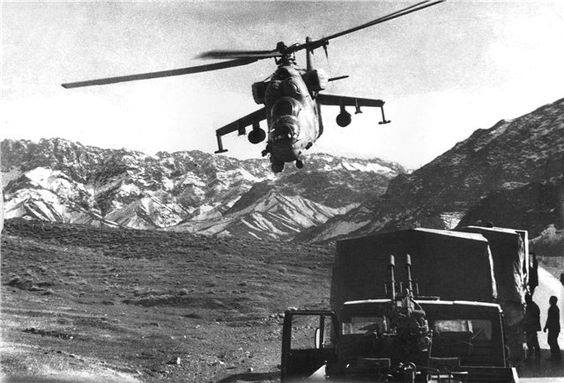 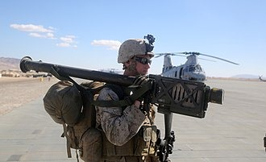 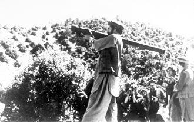 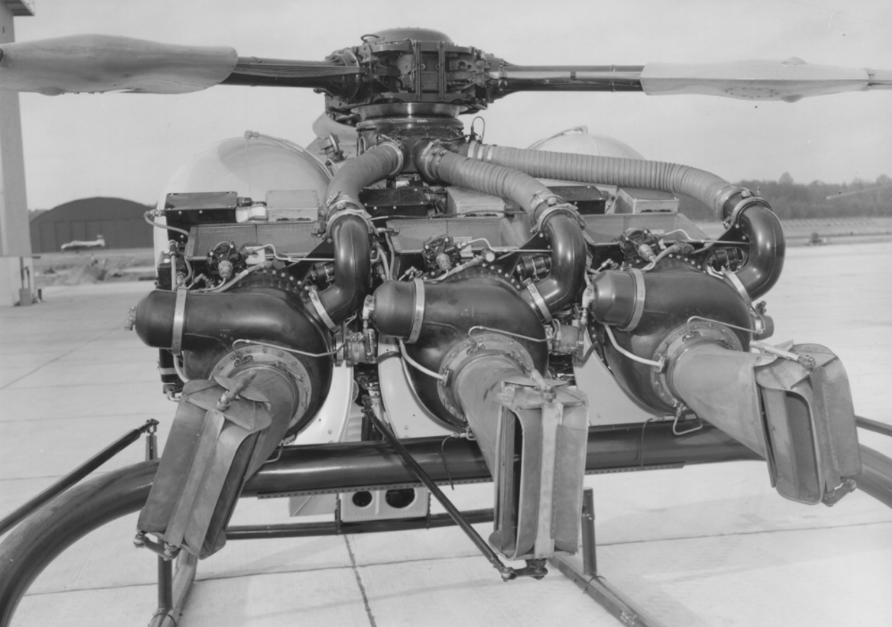
<아프간 봉이 김선달> 톰 행크스 주연의 2007년 영화 Charlie Wilson's War는 주인공인 윌슨 의원이 훈장을 받으면서 행복하게 끝나지만 실상은 그리 아름답지만은 않았음. 스팅어 공급은 이미 1988년 중단되었는데 이유는 무자헤딘 전사들이 공짜로 받은 스팅어 미쓸을 쏘련과 이란에게 비싼 돈 받고 팔고 있다는 것을 미국이 알았기 때문. 이란과 쏘련만 해도 양반이었고, 당시 항공기 폭파 테러가 유행이었으므로 미국은 자국산 스팅어가 공항 근처에서 여객기 격추에 쓰일까봐 전전긍긍. 이후 CIA는 스팅어 회수에 전력을 기울였으나 지들이 몇 발을 뿌렸는지도 불분명 (보고서에 따라 500발~2000발). 암튼 스팅어 회수를 위해 미국이 보낸 것은 제임스 본드도 아니요 에단 헌트도 아니요 척 노리스도 아닌 달러 채운 가방. 5천5백만 달러를 뿌려 300기의 미쓸을 회수. 발당 18만3천불을 준셈. 현재 스팅어 가격이 발당 3만8천불 정도인데, 인플레를 생각 안해도... 그러나 상당수는 이미 크로아티아, 이란, 스리랑카, 카타르, 심지어 북한에도 들어감.
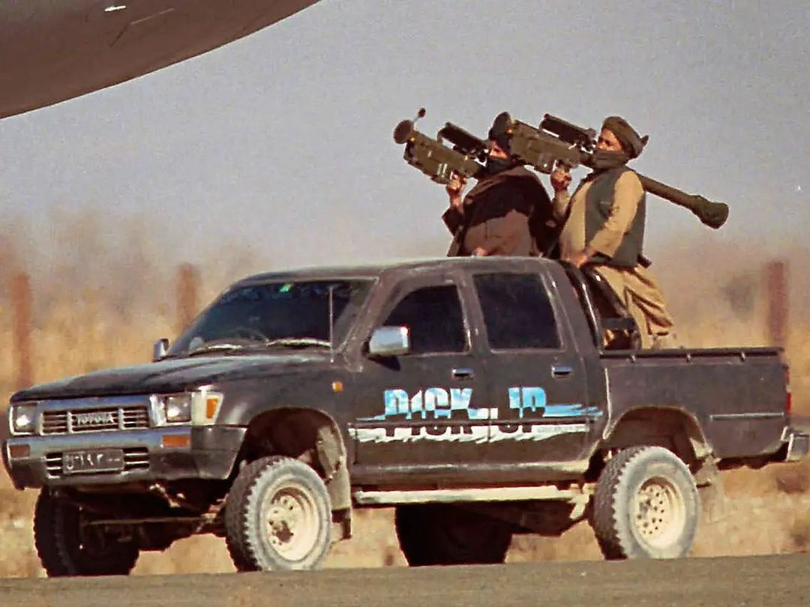
<밀덕의 전설> 톰 행크스 주연의 2007년 영화 Charlie Wilson's War 중에 윌슨 의원이 아프간 담당 CIA 요원을 야외에서 만나 'Mi-24 헬기에 대항하여 무슨 무기를 지원해주면 되겠나? 오리콘 대공포 같은거?'를 묻는데 CIA 요원이 저쪽 벤치에서 체스를 두는 비쩍 마른 젊은이를 불러 '이 친구에게 물어보라 이 친구가 그런거 담당'이라며 소개해주는 장면이 나옴. 대학생 같은 행색의 이 말라깽이 젊은이를 본 윌슨 의원이 장난하냐고 불평하다가 이 젊은이가 솰솰 읊어대는 첨단 무기 지식에 놀라 자신의 무례를 사과하고 이 젊은이는 태연히 체스 게임으로 돌아감. 당시 이 젊은이가 추천한 것이 Stinger 미쓸. (사진 1,2,3) 이 젊은이가 Michael G. Vickers (사진4). 1953년 생인 그는 미육군 특수부대 부사관으로 복무하다 장교로 임관되어 5년 더 근무한 뒤 CIA에서 para-military 전문가로 (아마 비정규직으로) 일함. 이 양반은 2010년 버락 오바마 때 Under Secretary of Defense for Intelligence (USD-I)로서 당시 미국방부 내에서 민간인으로는 최고 군사 정보 전문가로 일함. 주로 저강도 분쟁 전문가로 활약. 가히 밀덕들의 꿈이라고 할 만한 것은 다 이룬 셈.
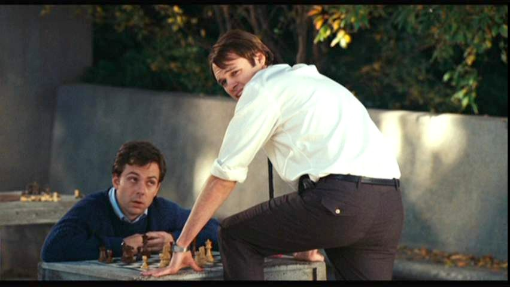 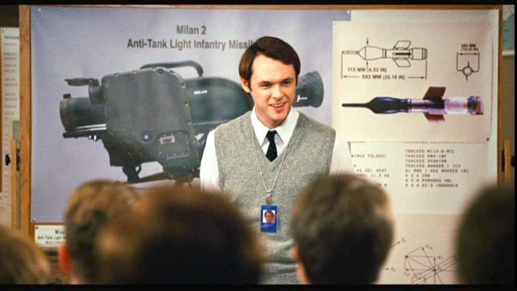
<무자헤딘 전사들이 스태미너가 좋았나?> 영화 '찰리의 전쟁'에서 Mi-24 헬기에 대항하기 위해 톰 행크스가 제안한 오리콘 대공포란 1920년대에 스위스에서 개발되어 2차 세계대전 때 많이 사용된 Oerlikon 20 mm cannon(사진1)를 뜻함. 무자헤딘 전사들이 그런 무거운 것을 들고 산악지대에서 뛰어다닐 수가 없으므로 군사 전문가인 비커스가 제시한 대안이 Stinger 미쓸. 그러나 실제로는 아프간에서 격추된 많은 쏘련 헬기들은 역시 제2차 세계대전 때부터 많이 사용된 쏘련제 DShK 12.7mm 대공포(사진2)에 맞아 떨어진 것. 아프간 애들이 스태미너가 좋아서 저런 중기관총을 들고 산악지대를 뛰어다녔을까? 당연히 아님. 이번에 탈레반 애들이 카불에 입성할 때 보여줬듯이 도요타 픽업 트럭 많이 사용함(사진3). 전쟁은 무기도 중요하지만 수송수단이 매우 중요함.
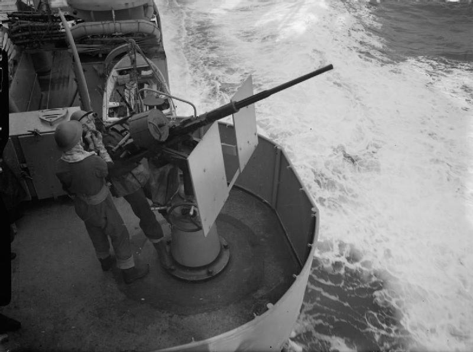 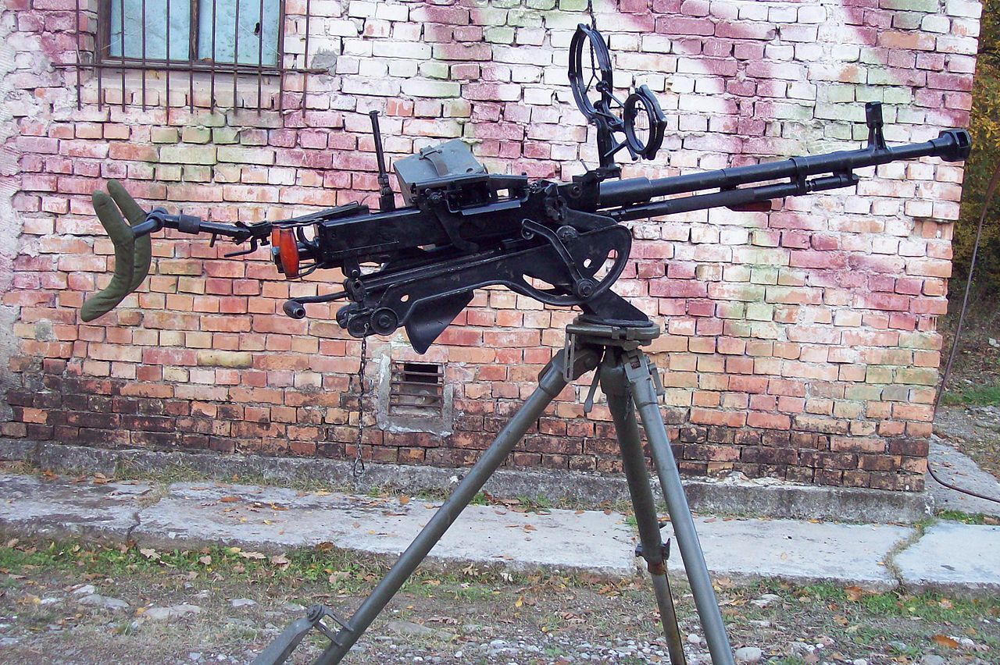
<쏘련제 무기의 우수성> 싸고 단순하다는 것. 가령 무자헤딘이 Stinger보다 더 많은 Mi-24 헬기를 격추했다는 DShK 12.7mm 대공포는 1990년대 체첸 전쟁 때 쏘련판 A-10이라고 할 수 있는 Su-25(사진1,2)까지 격추시킴. 무식해보이는 DShK (사진3)로 제트기까지 떨굴 수 있었던 것은 저 2개의 둥근 테로 이루어진 간단한 기계식 대공 조준기 덕분. 원리는 잘 모르겠으나 최소한 스팅어 미쓸보다는 훨씬 쓰기 쉬운 모양. 어디서 읽었는지 기억 안나는데 스팅어는 쏘려면 최소 108시간인가의 교육 훈련이 필요하다고... ** 말장난 같지만 단점도 똑같이 싸고 단순하다는 점. Su-25가 진짜 A-10이었다면 12.7mm에 떨어지진 않았겠지....
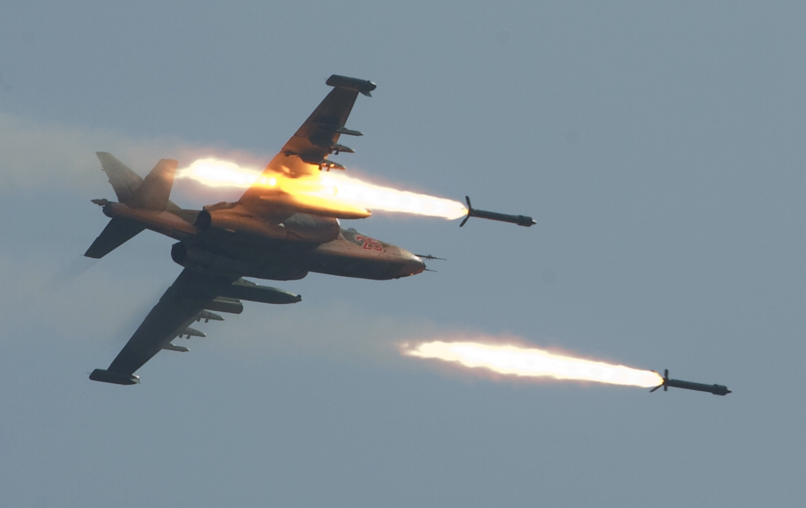 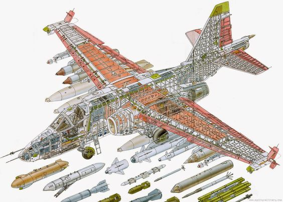 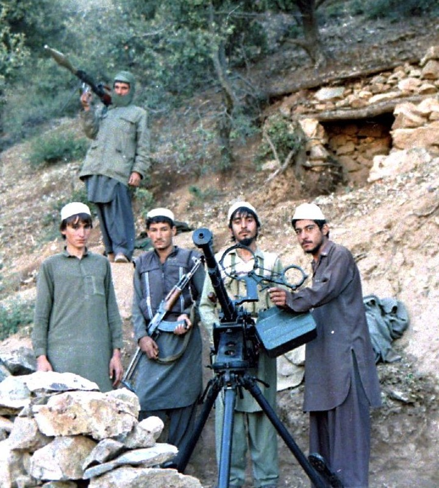